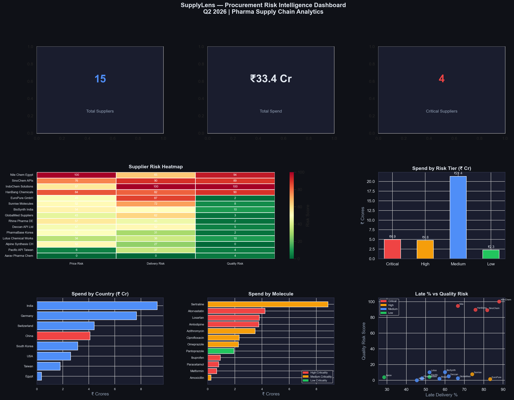

SupplyLens - Procurement Risk Intelligence System
A pharma manufacturer with no visibility into which of its 15 suppliers represented genuine risk. The question behind the question: how do you triage intervention in a portfolio with no existing risk framework?
I structured a multi-dimensional risk framework across price volatility, delivery reliability, and quality, then built a 4-step agentic pipeline that autonomously classifies supplier risk and generates executive decision memos via LLM. Quarterly reporting went from days to on-demand.

400+ POs analysed
15 suppliers scored
₹4.9 Cr intervention risk flagged
4 Critical suppliers identified
PythonPandasPlotlyLLM AgentsGroq APIRisk Scoring